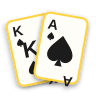
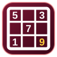

Laboratorio
Acá se prueban los juegos y las mejoras de la app antes de que lleguen a todos.
Lo de aquí puede cambiar o romperse. Si algo falla, avísanos con 🐞 Reportar un problema en el juego.
🎲 Juegos en prueba
🔮 Canica Cósmica
Deja el teléfono plano e inclínalo: la canica rueda por cinco mundos (cielo, agua, galaxia, electricidad y volcán) hasta el hoyo. Tres vidas.
🔮 Jugar Canica Cósmica🏁 Derrape
Contrarreloj de rally visto desde arriba: el auto derrapa entre puertas. Versión gris para ajustar cómo se maneja.
🏁 Jugar Derrape🔢 Gemelos
Un tablero al día: suma cada número con su gemelo de al lado (8 + 8 = 16) hasta que quede uno solo. Nombre provisorio.
🔢 Jugar Gemelos🗝️ Críptico
Tres pistas crípticas al día (fácil, media y difícil) que suman 100 puntos. Cada una esconde una palabra en un juego de palabras.
🗝️ Jugar Críptico🐸 Croc!
Cruza la autopista y el canal: esquiva autos, súbete a los botes y salta con tu Dash.
Listo para lanzar en /croc/.
🐸 Jugar Croc!⚖️ Tembleque
Apila piezas en la balanza sin que se caigan.
Listo para lanzar: /wobbles/, en la portada, el buscador y los rankings.
✨ Nueve gritos distintos al dejarla equilibrada, en vez de siempre ¡Perfecto!

BlackjackBlackjack contra la casa, solo o con hasta 6 celulares, con apuestas simuladas.
✨ En prueba: mesa de fieltro, cartas en abanico y fichas dibujadas.
👀 Memorice
Dibujos que se tapan: toca el que te piden antes de que se acabe el tiempo.
Listo para lanzar en /memorice/.
👀 Jugar Memorice El prototipo del laboratorio🎲 Dominorama
Inspirado en Pips: pon las fichas de dominó para que cada zona de color cumpla su regla.
Listo para lanzar en /dominorama/.
✨ En prueba: la regla de cada zona en grande, en su esquina y con su color.
💥 Números explosivos
Inspirado en Number Match: junta pares iguales o que suman 10 hasta limpiar el tablero.
💥 Jugar Números explosivos⚙️ Artefactos
Como The Incredible Machine: pon rampas y ventiladores para que la pelota caiga en la canasta.
⚙️ Jugar Artefactos✨ Mejoras en prueba
Cambios al resto de la app, para mirarlos antes de que lleguen a todos.
Ahora no hay ninguna en prueba: las lanzadas están en La Bodega.
📰 Franja de novedades
Una franja de novedades arriba de la portada; tocar una abre su splash. Tres estilos, cada uno con versiones más tranquilas.
📰 Ver los tratamientos🏆 La Copa: «🏆 Jugar» dorado en la portada
Si no tienes un día de La Copa por jugar, su tarjeta en la portada muestra un botón dorado «🏆 Jugar».
🏠 Ir a la portada🌐 Primera visita en el idioma del navegador
La primera visita se ve en el idioma del navegador si es inglés o portugués. Pruébalo con el navegador en uno de ellos.
🏠 Ir a la portada🎖️ Tu perfil
Tu página: logros y secretos, tu lugar en cada juego y tus ajustes. En cada barra superior, tu bandera y tu nombre la abren.
🎖️ Ver tu perfil🎖️ El detalle de cada logro
Toca un logro con ⓘ en tu perfil: te dice qué juegos te faltan, cuál está en estreno, tu mes en calendario y cómo ganarlo.
🎖️ Ver tu perfil🎖️ Fichas en tu perfil
Desde cuándo juegas y tus logros como dos fichas, 📅 y 🎖️, en vez de una frase; en la ficha de otro jugador, 📅 y 🎯.
🎖️ Ver tu perfil🥇 Medalla de podio que brilla
Del 1.º al 3.º de un ranking, la medalla de su ficha brilla con rayos y la tarjeta se enmarca en su metal.
🏅 Ir a Rankings🎮 Tus partidas en tu perfil
Cuántas veces terminaste cada juego, en barras, en la pestaña Logros de tu perfil. Ya no aparece en Rankings.
🎖️ Ver tu perfil👀 Perfil desde cualquier ranking
Toca un nombre en cualquier ranking para ver su perfil. Arriba dice de qué tabla vienes y su lugar en ella.
🏅 Ir a Rankings⚔️ Duelos
Reta a otro jugador a rondas de un juego: mismos niveles, 3 días. 🧪 suma duelos inventados, solo en este teléfono.
⚔️ Ver tus duelos🎠 Vista de íconos
La portada sin filtros, con los juegos en grupos de íconos. Al tocar uno se abre la portada del juego.
🏠 Ir a la portada🏅 Mejor día de copa de todos los juegos
En Rankings, «Mejor día de copa» suma los juegos que solo están en La Copa: Línea Relámpago, Toque y Fama: Número y La Gran Final.
🏅 Ir a Rankings🏅 Sin «Más victorias» vacías
En la portada de un juego de grupo, la tabla «Más victorias» no aparece hasta que alguien gane con su nombre.
📝 Ver Generala🔤 Toque y Fama: Palabra en Palabras
Con el filtro Palabras aparece Toque y Fama: Palabra, que abre directo la versión con palabras.
🔤 Probar en la portada📲 Instala Juegos de Salón
Una invitación nueva a instalar la app, en la portada después de tu primera partida. Pruébala en un celular sin la app.
🏠 Ir a la portada📣 Cada novedad se cuenta una vez
Lo que ya viste no te vuelve a interrumpir: avisos, anuncios y finales de copa salen una sola vez.
🏠 Ir a la portada📅 Uno al día: tus puntos, más limpios
El cuadro de arriba de Uno al día, más simple: tu lugar del mes en grande y la racha en una línea.
📅 Ir a Uno al día🥷 Shinobi: brillos más livianos
Al clavar una bandera, los anillos y brillos se dibujan sin desenfoque, para que el juego no se trabe en Firefox.
🥷 Jugar Shinobi🗼 Babel: el puntaje se suma solo
Al terminar Babel, el puntaje se arma frente a ti: los pisos, cada bono y el total, que brilla.
🗼 Jugar Babel📅 Uno al día: directo al resultado
En Uno al día, Shinobi y Aletazo pasan directo al resultado, sin la pantalla de «Fin del juego».
📅 Ir al Uno al día❌ Lo que cuesta un error, a la vista
En los juegos de lógica, una línea bajo el título dice cuánto cuesta equivocarse.
☀️ Jugar Tango🎮 Portadas: Instrucciones y Entrar en ventanas
En la portada de cada juego, «Instrucciones» y «Entrar» se abren en ventanas.
👑 Ver Reinas🖌️ Pintaminas: elige el pincel primero
Pintaminas parte sin pincel: hay que elegir uno antes de pintar, para no pintar por error.
🖌️ Jugar Pintaminas📅 Al terminar un juego, el Uno al día de hoy
Al terminar un juego suelto, una línea te invita al Uno al día de hoy, si todavía no lo juegas.
👑 Jugar Reinas🚇 Rutas rotas: 💡 Pista
Jugando solo, el botón Pista marca un tramo del camino y resta 3 puntos. En La Copa no aparece.
🚇 Jugar Rutas rotas🚅 Tren en Vilo: 💡 Pista
Jugando solo, «💡 Pista (−3)» junto a Deshacer marca una viga del puente conocido; tócala para ponerla. Cada pista resta 3 puntos.
🚅 Jugar Tren en Vilo〰️ Zip: modo difícil con muros
Zip suma 🔴 Difícil en su página: muros que el trazo no puede cruzar, más muros y menos números en cada nivel. La Copa no cambia.
〰️ Jugar Zip difícil☀️ Tango: puntúa el tiempo, como Reinas
Tango puntúa el tiempo, como Reinas: solo, en Uno al día y en copas nuevas. Los errores no restan; las copas en curso no cambian.
☀️ Jugar Tango📴 Modo sin conexión
Los juegos se abren sin señal. Pruébalo: abre unos juegos con señal, pon el modo avión y vuelve a abrirlos.
Conexión: midiendo…
〰️ Probar con Zip⚙️ Sonido e idioma, solo en tu perfil
Fuera del inicio, 🔊 y la bandera del idioma se cambian solo en ⚙️ de tu perfil.
🪢 Abrir El Ahorcado📴 Modo sin conexión ampliado
Sin señal, la portada muestra una placa fija «📴 SIN CONEXIÓN»; los juegos, solo los colores. Pruébalo con «Forzar modo sin conexión».
🏠 Ir a la portada📳 Apagar la vibración
En tu perfil, en ⚙️ Preferencias, el interruptor «Vibración» apaga la vibración en todos los juegos de este celular.
🎖️ Abrir tu perfil☁️ La nube solo cuando hace falta
En la portada, la ☁️ aparece solo mientras guarda los juegos o si falta alguno. Con cuenta, siempre la ves en tu perfil, en ⚙️.
🏠 Ir a la portada🏆 La Copa: hora de tu celular
Al crear una copa, el público y la hora se eligen según dónde está tu celular, no según tu idioma.
🏆 Crear una copa🏆 La Copa sin conexión
Juega tu día de La Copa sin señal: el resultado se sube solo cuando vuelve.
🏆 Abrir La Copa🏆 La Copa: globo de comentarios
Un globo amarillo sobre la tabla de la copa avisa, una sola vez, que se puede comentar.
🏆 Abrir La Copa🏆 La Copa: aviso de comentarios
Te avisa cuando alguien comenta tu resultado en la copa: dice quién, nunca qué.
🏆 Abrir La Copa🏆 La Copa: comentarios en la tabla
En la tabla de la copa, deja un comentario corto en el resultado de hoy de cualquier jugador.
🏆 Abrir La Copa🏆 La Copa: hasta 20 jugadores
Hasta 20 jugadores. Desde el 11.º, tabla y gráfico muestran 10; la tabla dice cuántos lugares subió o bajó cada uno el último día cerrado.
🏆 Ver una copa de 20📦 La Bodega
Los proyectos que ya no se están trabajando, porque no prosperaron, porque salieron de la portada o porque ya pasaron a todos. Quedan guardados acá y se pueden seguir abriendo.
🎲 Juegos guardados
🦎 El Camaleón
💤 No prosperó. Inspirado en The Chameleon, de Big Potato Games: un celular que pasa de mano en mano, de 3 a 8 jugadores. Todos ven la palabra secreta de un tablero de 16, menos el camaleón. Cada uno da una pista, votan, y si pillan al camaleón todavía se salva adivinando la palabra.
Sigue ahí con tu llave del laboratorio, en los tres idiomas y con seis temas.
🦎 Jugar El Camaleón⚓ Batalla Naval: modo Salva
💤 No prosperó. Cada turno disparabas tantas veces como barcos te quedaran a flote y veías todos los resultados juntos. A nadie le gustó: la clásica sigue siendo la de siempre.
Sigue ahí con tu llave del laboratorio: el interruptor 🎆 Salva en ¿Cómo jugamos?
⚓ Jugar Batalla Naval🔍 El caso
💤 No prosperó. Un misterio al estilo de Clues by Sam: veinte sospechosos y pistas que siempre dicen la verdad. Descubre quién es criminal sin adivinar.
Es el caso del día, el mismo para todos; al terminar se puede jugar otro.
🔍 Jugar El caso🔐 La clave
💤 No prosperó. Unas cartas transparentes esconden una clave: una palabra de 5 letras (en español) o un código de 5 cifras. Hay que ponerlas sobre la base y girar y voltear cada una hasta que los trazos formen la clave sin pisarse; en Palabra, cada carta tiene dos caras distintas.
🔐 Jugar La clave🔗 Conexiones
👋 Salió de la portada. Arma cuatro grupos de cuatro palabras que tienen algo en común. Dejó la portada, La Copa y Uno al día cuando 🕵️ Agentes salió del laboratorio y tomó su lugar; las copas creadas antes la siguen jugando.
🔗 Jugar Conexiones👑 Cuarto Rey
👋 Salió de la portada. El juego de naipes para tomar, de 4 a 6 jugadores con un solo celular: cada uno saca una carta, la app dice quién toma y termina cuando sale el cuarto rey.
👑 Jugar Cuarto Rey🍹 Julepe
👋 Salió de la portada. Naipes y sorbos contra el celular o con amigos, en uno o en varios celulares: cada uno dice si va o se pasa, y quien va y no hace dos bazas se toma el plato entero.
🍹 Jugar Julepe🚉 Transbordo
💤 No prosperó. Un puzle de metro para jugar solo, sobre el Metro de Santiago real: ordenabas cartas de ruta (avanza, otro andén, combina) y el tren las recorría, en cinco viajes con una regla más cada uno.
🚉 Jugar Transbordo✅ Listo para publicar
💤 No prosperó. Contaba cuánto usaban los testers cada mejora en prueba (aperturas, usos completos, fallas y llaves distintas, solo números) y la tarjeta avisaba cuando una pasaba la vara para publicarla. Quedó apagado.
🏠 Probar en el sitio🎠 Íconos que abren una hoja con tabs
💤 No prosperó. Con la vista de íconos, tocar un ícono subía una hoja con tabs (Detalles y Ranking) en vez de abrir la portada del juego. Quedó apagado: el ícono abre la portada.
🏠 Ir a la portada✨ Mejoras lanzadas
Ninguna mejora lanzada tiene esa palabra.
🔢 Toque y Fama: explorar no resta
🚀 Lanzado. En Toque y Fama jugando solo y en el Número de La Copa, un intento que las pistas ya descartaban no resta los 15 puntos si trae alguna cifra que no habías probado: estabas explorando. Tras 1234 con 2 toques, 5678 ya no resta; 9215 después de 1234, 5678 y 9245 sí, porque todas sus cifras ya estaban probadas.
🔢 Jugar Toque y Fama🐤 Aletazo en La Copa: si empatan, gana quien tiene más 🎯
🚀 Lanzado. Si dos jugadores sacan los mismos puntos en el día de Aletazo, gana quien pasó más veces por el medio de un aro 🎯, no quien voló un milisegundo menos (todos vuelan el mismo recorrido, así que el tiempo casi no cambia). Si también empatan en eso, comparten el lugar y los puntos. Las reglas del día lo dicen así.
🏆 Abrir La Copa
Sudoku
🚀 Lanzado. El clásico de los números es para todos: llena el tablero sin repetir números en ninguna fila, columna ni cuadro; fácil es un mini sudoku de 6×6 y difícil, el clásico de 9×9, con notas, deshacer y reloj. Está en la portada, la búsqueda, La Copa, Uno al día y su ranking por nivel, en los tres idiomas, en /sudoku/.
✨ En prueba: los números en dos filas de teclas más grandes.
🐤 Aletazo
🚀 Lanzado. Aletazo, inspirado en Flappy Bird, de Dong Nguyen, es para todos: cada toque hace subir al pájaro; pasa por los aros (al medio vale doble) y por los huecos de los muros, sin chocar, con 3 vidas. Está en la portada, la búsqueda, las copas nuevas, su ranking y Uno al día, en los tres idiomas, en /flap/.
🐤 Jugar Aletazo El prototipo del laboratorio🎨 Sistema de diseño
🚀 Lanzado. Cada color, distancia, esquina, título y botón de la app, en vivo y desde las hojas compartidas: la referencia para diseñar una pantalla o un juego nuevo, y lo que el agente de usabilidad compara con los juegos (D-533).
🎨 Ver el sistema🌐 El idioma, arriba en los juegos
🚀 Lanzado. En la portada de cada juego ya no van las tres banderas bajo el título: arriba, junto al sonido, queda un solo botón con la bandera del idioma actual, y al tocarlo se abren las tres. El idioma se elige una vez y se olvida, así que el título queda justo sobre los modos. También en La Copa y en Uno al día. La portada del sitio y Rankings siguen igual.
🪢 Ver en El Ahorcado🏆 La Copa: el podio se anuncia el último día
🚀 Lanzado. El último día de la copa, cuando lo que falta por jugar ya no puede cambiar los tres primeros lugares, el tablero lo anuncia arriba con el podio tal como va a quedar: «¡Cata ya ganó la copa!». Cuenta solo con lo que cada jugador puede ver, así que si todavía no jugaste el último día, el anuncio espera. El podio con sus medallas y el aviso del cierre llegan igual cuando la copa termina.
🏆 Ver el tablero del último día🏆 La Copa: otra copa con el mismo grupo
🚀 Lanzado. Cuando una copa termina, bajo el podio el administrador ve «🏆 Otra copa con este grupo». Abre la pantalla de crear ya llena con lo de esa copa: el nombre, cuántos días dura y si tiene final, el idioma, el público, la zona horaria y su nombre, con juegos nuevos y partiendo mañana. Arriba dice de dónde viene todo; revisa, cambia lo que quieras y confirma con Crear la copa. Queda en Administrar con la invitación lista para mandarla al mismo grupo.
🏆 Ver el podio del administrador🥷 Shinobi
🚀 Lanzado. Shinobi, inspirado en Stick Hero, de Ketchapp, es para todos: mantén el dedo para estirar el palo y suéltalo para tender el puente; si la punta cae en la bandera, es perfecto y suma más. Está en la portada, la búsqueda, las copas nuevas, su ranking y Uno al día, en los tres idiomas, en /shinobi/.
🥷 Jugar Shinobi🧪 Ribbon de tester
🚀 Lanzado. Reemplazó la etiqueta «tester» de la portada y la pestaña 🧪 de Babel. Una pestaña con una T brillante en el borde derecho, bajo la barra de arriba, que no mueve nada de la página. Al tocarla se abre con la (i) que explica qué es ser tester, un link a Labs y el control que la pantalla tenga para probar (en /babel/, «Simular final»). También trae un interruptor para cada novedad del laboratorio que use esa pantalla, para probarla con y sin ella. Se pliega al tocar fuera. Solo la ven quienes tienen llave.
🗼 Verlo en Babel🗼 Babel
🚀 Lanzado. Inspirado en Stack, de Ketchapp: Babel ya está para todos en la portada, la búsqueda y las copas nuevas, con su página, ranking y Uno al día. Un bloque se desliza sobre la torre y un toque lo suelta; lo que sobresale se corta. Suena con música retro, que se apaga en la portada con «🎵 Música: sí / no».
🗼 Jugar Babel El prototipo, en inglés🏆 La Copa: tu copa, tu lugar y el juego del día en la portada
💤 No prosperó. La tarjeta de La Copa en la portada dice en qué copa estás, en una etiqueta sobre el borde, como el mes del Uno al día. Muestra primero tu lugar y después el juego que toca («Vas 2.º de 6. Hoy: Conexiones.»), con una barra de los días de la copa. El botón dice qué día abre («▶ Jugar el día 3», «▶ Jugar la final») y se ve más fuerte. Con dos copas o más muestra una línea por copa. Si no tienes copa, invita con el botón amarillo de siempre, como «▶ Únete al mes» del Uno al día: «▶ Crea o únete a una Copa». Los nombres largos terminan en «…».
🏠 Ir a la portada🥇 Uno al día: tu lugar al cerrar el mes
🚀 Lanzado. Cuando termina el mes, la primera visita a la portada muestra tu lugar final en Uno al día, una sola vez: medalla de oro, plata o bronce con fuegos artificiales para los tres primeros, y tu lugar en grande para el resto, con la invitación a jugar el mes siguiente.
💊 Portada: botones de arriba parejos
🚀 Lanzado. En la barra de arriba de la portada, los botones de sonido, 🏅 Rankings y compartir son píldoras de la misma altura que el selector de idioma, y se ven alineados.
🏠 Ir a la portada🏆 La Copa: ‹ vuelve a la copa, no al menú
🚀 Lanzado. Dentro de una copa, el botón ‹ de arriba sube un nivel a la vez: mientras juegas un día o miras su resultado dice «Volver a la copa» y lleva al tablero (si el día está en juego, primero pregunta «¿Salir de la partida?»; la partida de prueba vuelve a la portada del día), y en el tablero dice «‹ La Copa» y lleva a la portada de La Copa, con tus copas.
🏆 Ir a La Copa👆 Juegos: sin zoom al tocar rápido
🚀 Lanzado. En iPhone, dos toques rápidos en un juego agrandaban la página y cortaban la partida. Ahora los toques rápidos ya no hacen zoom; con dos dedos se sigue pudiendo agrandar. Lo pidió un jugador (#1045).
🏆 Ir a La Copa🛡️ Nombres ofensivos fuera de los rankings
🚀 Lanzado. Al crear un jugador para los rankings, un nombre con un insulto o una grosería, en cualquiera de los tres idiomas y aunque venga con espacios, números en vez de letras o pegado a otra palabra, no se acepta: pide elegir otro. Si alguno se cuela, se le cambia el nombre a mano.
🏅 Ir a Rankings🏆 La Copa: cuánto falta para tu próximo día
🚀 Lanzado. Si ya jugaste tu día de La Copa, su tarjeta en la portada muestra «✅ Día 2 en 5h» y va descontando. Cuando el día abre, cambia a «▶ Jugar hoy». Si ya jugaste la final, muestra «✅ Final · cierra en 3h».
🏠 Ir a la portada📖 Reglas con lo esencial
🚀 Lanzado. En la página de cada juego de La Copa, como Reinas o Zip, las reglas empiezan con una línea: cuántos juegan, cuánto dura y que es gratis, sin instalar nada y sin cuenta. Es lo mismo que ya dicen los juegos de grupo.
👑 Ir a Reinas🏆 La Copa: «Jugar hoy» en la portada
🚀 Lanzado. Si tienes un día de La Copa por jugar, su tarjeta en la portada muestra «▶ Jugar hoy», como el Uno al día, y te lleva directo a ese día. Si ya jugaste, la tarjeta queda como siempre.
🏠 Ir a la portada📅 Uno al día: los puntos los suma el servidor
🚀 Lanzado. Tu celular ya no suma tus puntos del mes, tu semana ni tu mejor racha: solo sube lo que jugaste, y el servidor lo cuenta cada hora para todos por igual. En Uno al día ves tus puntos de hoy al tiro, porque tu celular los agrega mientras tanto; en 🏅 Rankings, los tuyos y los de todos aparecen dentro de la hora.
📅 Ir a Uno al día⌨️ Enviar con el teclado abierto
🚀 Lanzado. En un iPhone, el teclado tapaba el botón Enviar del formulario de 💬 Sugerencias y comentarios, y había que cerrarlo para mandar. Ahora el formulario sube y queda entero sobre el teclado.
🏠 Ir a la portada🏆 La Copa: arma la semana con el dado
🚀 Lanzado. Una pantalla más corta para crear una copa: la semana se ve de entrada, 🎲 Crear al azar sortea una semana nueva, y hay estilos de semana (Equilibrada, Puzzles, Saber y palabras, Lo nuevo). Toca un juego para cambiarlo por cualquiera de los 13, con una línea de qué es cada uno. También se puede elegir una Copa de 3 días: tres juegos, sin final. Idioma, público y link quedan en Más opciones, y el PIN se escribe una vez.
🏆 Ir a La Copa🏆 La Copa: el podio de una copa archivada
🚀 Lanzado. Todos ven ahora, al abrir el link de una copa que terminó hace más de dos años, su nombre, cuándo terminó y su podio 🥇🥈🥉, con dos botones: crear una copa nueva con el mismo nombre y ver el medallero.
🏆 Ir a La Copa🙈 Panel: no contar este navegador
🚀 Lanzado. En el panel, junto a Environment, está siempre la casilla «Don't count this browser»: lo que juegues y visites en el sitio publicado desde ese navegador va a «My devices» y no a Live. Se marca en cada celular y computador por separado.
📊 Ir al panel🧭 «Cómo se juega» dice quiénes y cómo
🚀 Lanzado. Todos ven ahora, como primera línea de «Cómo se juega», cuántos juegan y cuánto dura, si es en un celular, en varios o solo, y que es gratis, sin instalar nada y sin cuenta. Está en Línea de Tiempo, Toque y Fama, El Ahorcado, Dudo, Generala y Batalla Naval, y también lo leen los buscadores.
🪢 Ir a El Ahorcado📅 Uno al día: tu resultado en cuadritos
🚀 Lanzado. Al compartir el resultado de Uno al día, el mensaje suma para todos una grilla de cuadritos 🟩🟨🟥 de cómo te fue, sin decir el juego ni la respuesta. Agentes no la lleva (mostraría dónde estaban los agentes), ni Dudo ni Generala, que son de dados.
📅 Ir a Uno al día👑 Reinas: una textura por zona
🚀 Lanzado. Todos ven ahora una textura suave sobre el color de cada zona del tablero de Reinas (rayas, puntos, una cuadrícula), para quien no distingue bien los colores. La corona y la ✕ se siguen leyendo encima.
👑 Jugar Reinas🌅 El pie en todas las pantallas fuera del juego
🚀 Lanzado. El mismo pie de la portada, con el resplandor violeta, 💬 Sugerencias y ☕ Invítame a un café, al final de Rankings y Uno al día (con la frase graciosa) y de la tapa de cada juego y la entrada de La Copa (sin la frase). Nunca mientras se juega ni en la pantalla del resultado.
🏅 Ver en Rankings 🪢 Ver en la tapa del Ahorcado🔢 Toque y Fama: los 100 puntos son de quien deduce
🚀 Lanzado. En Jugar solo, en el 🔢 de La Copa y en la ronda del número de la final partes con 100 y cada intento que las pistas ya descartaban resta 15 (el mínimo es 10 si lo sacas). Antes se contaban los intentos a secas, así que el 100 era pura suerte al primer intento. Al terminar, el tablero marca con ⚠️ los intentos descartados.
🔢 Ir a Toque y Fama🦃 Thanksgiving en la portada
Del 22 al 29 de noviembre: atardecer de fondo, caen hojas y un pavo pasa por detrás de los juegos.
🚀 Lanzado: estos días la ven todos los jugadores.
🦃 Ver la portada🎃 Halloween en la portada
Del 26 al 31 de octubre, la portada y Rankings se disfrazan un poco. El ícono de la pestaña es una calabaza, el fondo brilla en naranjo, hay una telaraña en la esquina, el 🎲 del título se turna con 🎃 👻 🦇 y entre las partículas del fondo suben murciélagos y fantasmas. Un murciélago cruza la pantalla una vez, de vez en cuando se asoma un fantasma y cada 40 segundos aparece un susto distinto: una calavera gigante que se asoma por el borde, una araña enorme que cruza corriendo, unos ojos que parpadean en la oscuridad o un zombi que sube tambaleándose. Los juegos quedan iguales. El 1 de noviembre se apaga solo.
🚀 Lanzado: estos días la ven todos los jugadores. El botón la muestra cualquier día y siempre con el fantasma, que a los jugadores les sale en una de cada quince visitas. Las próximas temporadas se prueban primero acá, solo con tu llave.
🎃 Ver la portada🎉 Splash: un toque afuera no la pierde
🚀 Lanzado. Una ventana de novedades sale una sola vez por celular, y un toque afuera por error la cerraba para siempre. Ahora, cerrarla tocando afuera (o con Escape) la deja para otra visita; si vuelves a cerrarla así, ya no sale más. La ✕, «Ahora no» y cualquier botón de la ventana la cierran de una vez, como antes.
🎉 Ir a la portada🌅 El pie de la portada: atardecer violeta
🚀 Lanzado. La portada termina en un resplandor morado y rosado, los colores del sitio. La frase que va cambiando queda en blanco, y 💬 Sugerencias y ☕ Invítame a un café son botones de vidrio, cada uno con un círculo de color sobre el nombre. Se eligió entre doce variantes, que siguen acá.
🌅 Ver la portada 🎲 Las doce variantes👤 Rankings: Tus partidas, plegadas
🚀 Lanzado. En la página de Rankings, la lista de cuántas veces jugaste cada juego viene cerrada, con el total en su título: los rankings quedan a la vista de entrada, y la lista se abre con un toque. Lo pidió un jugador por correo.
🏅 Ir a Rankings🔢 Toque y Fama: una sola tarjeta
🚀 Lanzado. En la portada, Toque y Fama: Palabra ya no tiene tarjeta propia: Toque y Fama dice "el número o la palabra", y adentro dos botones eligen 🔢 Número o 🔤 Palabra, como las variantes de Loteo. Los links viejos a la palabra siguen funcionando. Lo pidió un jugador por correo.
🔢 Ir a Toque y Fama☕ Invítame a un café
🚀 Lanzado. Un aporte voluntario con Stripe, desde US$1, sin anuncios ni popups: al pie de la portada y al final de algunas partidas terminadas, abre una tarjeta encima de la pantalla. El splash 🥂 del brindis se enciende desde 📣 Campañas del panel.
☕ Ver la tarjeta🚅 Tren en Vilo
🚀 Lanzado. Inspirado en Poly Bridge: refuerza la vía con vigas sobre un barranco y prueba si el tren cruza. Salió del laboratorio a la portada, Uno al día y La Copa; acá quedan las hojas con que se eligieron el tren y los visitantes.
🚅 Jugar Tren en Vilo 🚄 Los colores del tren bala 🛸 Los visitantes🎲 Dudo: reglas tradicionales
🚀 Lanzado. El interruptor «📜 Reglas clásicas» al preparar la partida, apagado de entrada: nadie abre en ases y, con tres jugadores o más, quien queda con un dado abre la ronda obligada, anunciada a toda la mesa: los ases no son comodín y la pinta no cambia. Debajo, una fila plegada «Variantes» con Pasar y Dudar a la siciliana. Y la primera vez que puedes calzar, una línea te explica qué es.
🎲 Jugar Dudo🎲 Dudo: agita el cacho y juega contra el reloj
🚀 Lanzado. Al armar la partida, Agitar para tirar viene encendido: cada ronda tu mano se vuelve un paño verde con dados más grandes, que ruedan mientras agitas el celular y quedan como cayeron cuando paras; luego el paño vuelve a ser tu mano con los dados en fila (en un computador, o si no das permiso en el iPhone, sale un botón). ⏱️ 30 segundos por turno viene apagado: quien no apuesta, duda ni calza a tiempo pierde un dado, sin destapar la mesa.
🎲 Jugar Dudo🏆 La Copa: qué te toca en cada copa
🚀 Lanzado. En "Tus copas", bajo el nombre de cada copa en curso, una línea dice dónde estás: ▶ "¡entra a jugar!" si hay un día listo (o "hoy último día para jugar" si cierra esta noche), ⏸ "termina tu juego" si quedó a medias, ✅ si ya jugaste y cuándo abre el próximo, ⏳ cuánto falta para que parta, 🚪 "Eliminado" si quedaste fuera. Si hay un solo día por jugar, tocar la copa lo abre directo.
🏆 Ir a La Copa🎲 Generala: la escalera con el as arriba
🚀 Lanzado. Cuando los dados salen 3‑4‑5‑6‑1 y la escalera está libre, debajo de los dados se lee que también es escalera: el 1 va después del 6. Un jugador creyó que era un error.
🎲 Jugar Generala📅 Uno al día: el ranking más rápido
🚀 Lanzado. El ranking de Uno al día aparece antes: se ve la última lista que viste hoy mientras llega la nueva, ya no vuelve a decir "Cargando…" cada vez que la página se actualiza, y pide sus datos una sola vez.
📅 Ir a Uno al día⚡ La portada al tiro
🚀 Lanzado. Desde la segunda visita del día, la lista de juegos, La Copa y Uno al día salen en cuanto se abre la portada, sin esperar a que cargue el resto: el celular recuerda cómo se veían la última vez. Y si ya jugaste el Uno al día de hoy, tu puesto del mes se actualiza solo en la tarjeta, sin entrar a Uno al día.
🎲 Ir a la portada👈 Salir en medio de una partida pregunta antes
🚀 Lanzado. Deslizar desde el borde para volver, tocar Atrás en Android o tocar «‹ Menú» en medio de una partida pregunta «¿Salir de la partida?», con Seguir jugando o Salir. Al terminar la partida, volver funciona como siempre.
🪢 Jugar El Ahorcado📅 Uno al día: el primer intento vale desde que empieza
🚀 Lanzado. El intento cuenta desde que empiezas a jugar: en un solitario, al volver sigues donde ibas, con tu tiempo; en El Ahorcado, Batalla Naval, Dudo o Generala, dejarlo a medias cuenta 0. Si no lo terminas en el día, también queda en 0. Mientras tengas uno a medias, Uno al día te lleva directo a él, sin el dado. Si entraste con tu nombre, vale también si lo empezaste en otro celular.
📅 Ir a Uno al día🏆 La Copa: el reloj no vuelve a cero en otro celular
🚀 Lanzado. Si sigues un día de la copa en otro celular (o se borró la memoria del navegador), el reloj sigue desde que empezaste, y la pantalla lo dice. El ejemplo abre una copa de mentira, solo en tu celular, donde tu día empezó hace 4 minutos en otro.
🏆 Ver el ejemplo🏆 Resumen de la copa al volver
🚀 Lanzado. Cuando termina una copa que jugaste, la próxima vez que abres la portada sale una ventana con la tabla final, cómo cambió cada lugar día a día y un botón para ver la copa. Sale una vez por copa, solo durante la semana después de que terminó, y esa vez no sale el splash de novedades.
El botón la muestra con la copa de ejemplo, sin guardar nada.
🏆 Ver el resumen de ejemplo📅 Resumen de la temporada de Uno al día
🚀 Lanzado. Cuando termina el mes, la primera vez que abres la portada en la semana siguiente sale una ventana con cómo terminó la temporada de Uno al día: quién ganó, tu lugar y tus puntos, y el top 10 con el lugar de cada uno semana a semana. Sale si jugaste ese mes, una vez por temporada. A quien tiene los avisos de Uno al día le llega además uno que dice que la temporada terminó.
El botón la muestra con una temporada de ejemplo, sin guardar nada.
📅 Ver el resumen de ejemplo🪟 Una ventana por visita en la portada
🚀 Lanzado. Al abrir la portada sale como máximo una ventana, en este orden: el resumen de una copa o de la temporada de Uno al día; si no hay, la novedad (el splash); y si tampoco, el globo para agregar la app a inicio. Lo demás espera a la próxima visita. Si hay dos novedades, sale una por visita, en orden.
🪟 Ir a la portada📅 Uno al día: +10 por invitar
🚀 Lanzado. Cada amigo que invitas y termina su primer Uno al día suma +10 pts a tu mes, una vez por amigo.
📅 Ir a Uno al día🏆 Puntos de Uno al día
🚀 Lanzado. Un puntaje y un ranking del mes para Uno al día: cada día suma el puntaje del juego más un bono por la racha. La tarjeta de la portada abre tu Uno al día, con tus puntos y tu puesto primero. El prototipo con las notas queda guardado.
📅 Ir a Uno al día🏆 La Copa: elige la casilla en Toque y Fama
🚀 Lanzado. Lo mismo que ya tiene Toque y Fama, ahora en el 🔢 de La Copa: toca una casilla y la próxima cifra va ahí.
🏆 Ir a La Copa🔢 Toque y Fama: elige la casilla
🚀 Lanzado. Lo pidió un jugador: al adivinar, toca una casilla y la próxima cifra va ahí, en vez de llenarse siempre de izquierda a derecha.
🔢 Jugar Toque y Fama🏠 Experimentos de la portada
La portada de verdad, con una barra abajo para prender y apagar lo que se probaba en ella, en cada idioma. Todo lo que se probó ya pasó a todos:
- 🚀 Lanzado · 🔎 Buscar: la píldora junto a Nuevos y Populares que se abre en un buscador de juegos.
- 🚀 Lanzado · 🎉 Splash: la ventana de novedades sobre la portada, que el dueño enciende para una campaña; si hay varias encendidas, sale una por visita, en orden. En la barra se sigue pudiendo mirar cada campaña antes de encenderla.
- 🚀 Lanzado · la etiqueta 🔥 Popular, las fichas ✨ Nuevos y 🔥 Populares y el nombre de la app en el menú flotante.
💊 Píldoras de filtros
Seis maneras de distinguir la fila de atajos (🔎 ⭐ ✨ 🔥) de la de tipos. 🚀 Lanzada la B: los atajos con contorno y los tipos con relleno.
💊 Ver las opciones